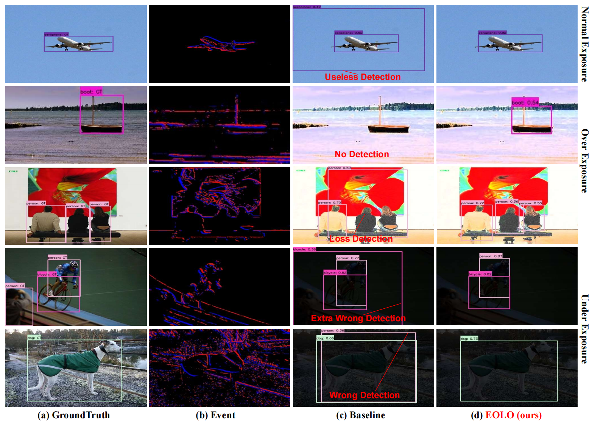
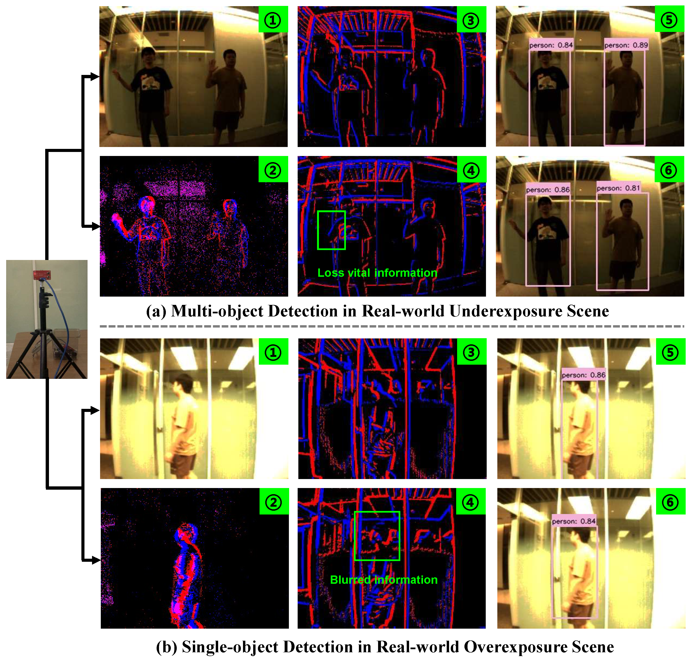

Chasing Day and Night: Towards Robust and Efficient All-Day Object Detection Guided by an Event Camera
(Accepted by ICRA 2024)
-
Jiahang Cao
MICS Thrust, HKUST(GZ)
-

Xu Zheng
AI Thrust, HKUST(GZ)
-

Yuanhuiyi Lyu
AI Thrust, HKUST(GZ)
-
Jiaxu Wang
MICS Thrust, HKUST(GZ)
-
Renjing Xu
MICS Thrust, HKUST(GZ)
-

Addison Lin Wang
AI Thrust, HKUST(GZ)
Dept. of CSE, HKUST

Abstract
The ability to detect objects in all lighting (i.e., normal-, over-, and under-exposed) conditions is crucial for real-world applications, such as self-driving. Traditional RGB-based detectors often fail under such varying lighting conditions. Therefore, recent works utilize novel event cameras to supplement or guide the RGB modality; however, these methods typically adopt asymmetric network structures that rely predominantly on the RGB modality, resulting in limited robustness for all-day detection. In this paper, we propose \(\textbf{EOLO}\), a novel object detection framework that achieves robust and efficient all-day detection by fusing both RGB and event modalities. Our EOLO framework is built based on a lightweight spiking neural network (SNN) to efficiently leverage the asynchronous property of events. Buttressed by it, we first introduce an Event Temporal Attention (ETA) module to learn the high temporal information from events while preserving crucial edge information. Secondly, as different modalities exhibit varying levels of importance under diverse lighting conditions, we propose a novel Symmetric RGB-Event Fusion (SREF) module to effectively fuse RGB-Event features without relying on a specific modality, thus ensuring a balanced and adaptive fusion for all-day detection. In addition, to compensate for the lack of paired RGB-Event datasets for all-day training and evaluation, we propose an event synthesis approach based on the randomized optical flow that allows for directly generating the event frame from a single exposure image. We further build two new datasets, E-MSCOCO and E-VOC based on the popular benchmarks MSCOCO and PASCAL VOC. Extensive experiments demonstrate that our EOLO outperforms the state-of-the-art detectors, e.g., RENet, by a substantial margin (+3.74% mAP_50) in all lighting conditions.
Overall framework of our EOLO

Qualitative results of our EOLO under all-day exposure conditions
Real-world Evaluation
BibTeX
@article{cao2023chasing,
title={Chasing Day and Night: Towards Robust and Efficient All-Day Object Detection Guided by an Event Camera},
author={Cao, Jiahang and Zheng, Xu and Lyu, Yuanhuiyi and Wang, Jiaxu and Xu, Renjing and Wang, Lin},
journal={arXiv preprint arXiv:2309.09297},
year={2023}
}